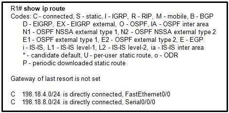
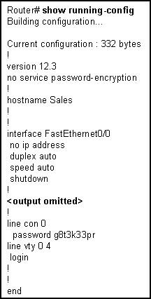
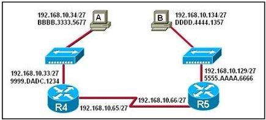
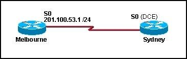
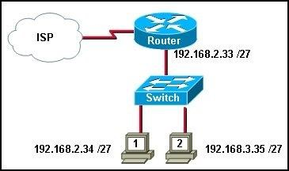
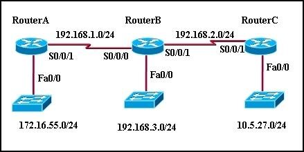
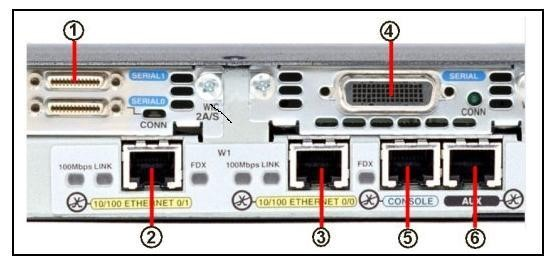
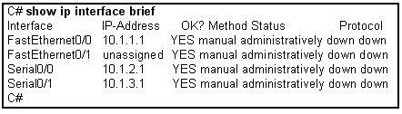

Chapter 1 – CCNA 2
01. Which are functions of a router? (Choose three)
- Packet switching;
- Extension of network segments;
- Segmentation of broadcast domains;
- Selection of best path based on logical addressing;
- Selection of best path based on physical addressing.
02. What is the default sequence for loading the configuration file?
- NVRAM, FLASH,ROM;
- FLASH,TFTP,CONSOLE;
- NVRAM,TFTP,CONSOLE;
- FLASH,TFTP,ROM.
03.  Refer to the exhibit. What can be concluded from the routing table ouput in the exhibit? (Choose two)
- This router only has two interfaces;
- The router interfaces are not operational yet;
- This router is configured to forward packets to remonte networks;
- The FastEthernet0/0 and Serial0/0/0 interfaces of this router were configured with an IP address and the no shutdown command;
- An IP packet received by this router whith a destination address of 198.18.8.2 will be forwarded out of the Serial0/0/0 interface.
04. Refer to exhibit. What can be concluded from the ouput of the running-configuration of a router?
- The passwords are encrypted;
- The current configuration was saved to NVRAM;
- The configuration that is shown will be the one used on the next reboot;
- The commands that are displayed determine the current operation of the router.
05. Passwords can be used to restrict access to all or parts of the Cisco IOS. Select the modes and interfaces that can be protected with passwords. (Choose three)
- VTY interface;
- Console interface;
- Ethernet interface;
- Secret EXEC mode;
- Privileged EXEC mode;
- Router configuration mode.
06. If a router cannot fiind valid configuration file during the startup sequence, what will occur?
- The startup sequence will reset;
- The router will prompt the user for a response to enter setup mode;
- The startup sequence will halt until a valid configuration file is acquired;
- The router will generate a default configuration file based on the last valid configuration;
- The router will monitor local traffic to determine routing protocol configuration requirements.
07.  Refer to exhibit. Host A pings host B. When R4 accepts the ping into the Ethernet interface, what two pieces of header information are included? (Choose two)
- Source IP address 192.168.10.129;
- Source IP address: BBBB.3333b5677;
- Source MAC address: 5555.AAAA.6666;
- Destination IP address: 192.168.10.33;
- Destination IP address : 192.168.10.134;
- Destination MAC address: 9999.DADC.1234
08.  The serial connection shown in graphic needs to be configured. Which configuration commands must be made on the Sydney router to establish connectivity with the Melbourne site? (Choose three)
- Sydney(config-if)#ip address 201.100.53.2 255.255.255.0
- Sydney(config-if)#no shutdown
- Sydney(config-if)#ip address 201.100.53.1 255.255.255.224
- Sydney(config-if)#clock rate 56000
- Sydney(config-if)#ip host name Melbourne 201.100.53.2
09. The network administrator needs to connect two routers directly via their FastEthernet ports. What cable should the network administrator use?
- Straight-through;
- Rollover;
- Cross-over;
- Serial.
10. Refer to exhibit. After host 2 is connected to the switch on the LAN, host 2 is unable to comunicate with host 1. What is the cause of this problem?
- The subnet mask of host 2 is incorrect;
- Host 1 and host 2 are on different networks;
- The switch needs an IP address that is not configured;
- The router LAN interface and host 1 are different networks;
- The IP address of host 1 is on a different network than is the LAN interface of the router.
11. What is the outcome of entering these commands?
R1(config)#line vty 0 4
R1(config-line)#password check123
R1(config-line)#login
- ensures that a password is entered before entering user EXEC mode;
- sets the password to be used for connecting to this router via Telnet;
- requires check123 to be entered before the configuration can be saved;
- creates a local user account for logging in to a router or switch.
12. From what location can a router load the CISCO IOS during the boot process? (Choose two)
- RAM;
- TFTP server;
- NVRAM;
- Setup routine;
- Flash memory;
- Terminal.
13.  Refer to exhibit. All routers have a route in its routing table to each network that is shown in the exhibit. Default routes have not been issued on these routers. What can be concluded about how packets are forwarded in this network? (Choose two)
- If RouterC receives a packet that is destined for 10.5.1.1, it will be forwarded out interface Fa0/0;
- If routerA receives a packet that is destined for 192.168.3.146, it will be forwarded out interface S0/0/1;
- If routerB receives a packet that is destined for 10.5.27.15, it will be forwarded out interface S0/0/1;
- If routerB receives a packet that is destined for 172.20.255.1. it will be forwarded out interface S0/0/0;
- If routerC receives a packet that is destined for 192.16.5.101, it will be forwarded out interface S0/0/1.
14.  Which interface in the exhibit could be used for a leased line WAN connection? (Choose two)
- 1
- 2
- 3
- 4
- 5
- 6
15. What header address information does a router change in the information it receives from an atached Ethernet interface before information is transmitted out another interface?
- Only the Layer 2 source address;
- Only the Layer 2 destination address;
- Only the Layer 3 source address;
- Only the Layer 3 destination address;
- The Layer 2 source and destination address;
- The Layer 3 source and destination address.
16. Refer to exhibit. The network administrator has configured the router with the interface IP address shown for the directly connected networks. Pings from the router to hosts on the connected networks or pings between router interfaces are not working. What is the most likely problem?
- The destination networks do not exist;
- The IP addresses on the router interfaces must be configured as network addresses and not host addresses;
- The interfaces must be enabled with the no shutdown command;
- Each interface must be configured with the clock rate command.
17. A network administrator has just entered new configurations into Router1. Which command should be executed to save configuration changes to NVRAM?
- Router1#copy running- config flash
- Router1(config)# copy running- config flash
- Router1# copy running- config startup-config
- Router1(config)#copy running- config startup-config
- Router1# copy startup-config running-config
- Router1(config)# copy startup-config running-config
18. What three processes does a router execute when it receives a packet from one network that is destined for another network? (Choose three)
- Decapsulates the Layer 3 packet by stripping off the Layer 2 frame header;
- Uses the destination MAC Address in the IP header to look up the next-hop address in the touting table;
- Leaves the Layer 2 frame header intact when decapsulating the Layer 3 packet;
- Uses the destination IP Address in the IP header to look up the next*hop address in the routing table;
- Encapsulates the Layer 3 packet into the new Layer 2 frame and forwards it out the exit interface;
- Encapsulates the Layer 3 packet into a special Layer 1 frame and forwards it to the exit interface.
19. Which two statements describe characteristics of load balancing? (Choose two)
- Load balancing occurs when a router sends the same packet to different destination networks;
- Load balancing occurs when the same number of packets are sent over static and dynamic routes;
- Load balancing allows a router to fordward packets over multiple paths to the same destination network;
- Unequal cost load balancing is supported by EIGRP;
- If multiple paths with different metrics to a destination exist, the router cannot support load balancing.
20. Which two statements correctly describe the components of a router? (Choose two)
- RAM permanently stores the configuration file used during the boot aequence;
- ROM contains diagnostics executed on hardware modules;
- NVRAM stores a backup copy of the IOS used during the boot sequence;
- Flash memory does not lose its contents during a reboot;
- ROM contains the most boot system commands to identify the location of the IOS;
- Flash contains boot system commands to identify the location of the IOS.
21. Which of the following is the correct flow of routines for a router startup?

{kind=link}
{kind=link}
{kind=link}
{kind=link}
{kind=link}
{kind=link}
{kind=link}
{kind=link}
it good n it help u to ans question easy